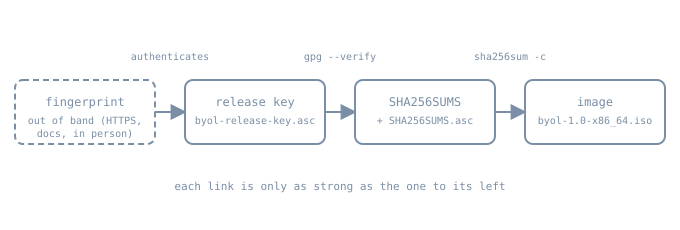

Documentation, Branding, and Publishing
Documentation, Branding, and Publishing
By the end of the previous chapter, byol-1.0-x86_64.iso boots in QEMU. A file that boots on your machine is not yet a release. Before anyone else can use it, three more things have to be true. The system must identify itself in a standard way, so tools and scripts can tell what they are running on. It must look like itself where a person meets it: the console banner, the login message, the logo. And the people who download it need a way to verify that the file they got is the one you built and that you are who built it.
This chapter does those three things for the capstone, then covers the documentation a first release needs.
1. Identity: os-release
The os-release specification defines one file that every modern tool consults: hostnamectl, package managers, installers, bug-report helpers, container tooling and the \S escape in util-linux agetty. Two details matter for a from-scratch distribution:
- Location. The vendor file is
/usr/lib/os-release./etc/os-releaseshould be a relative symlink to it,../usr/lib/os-release, so the link still resolves inside a chroot or initramfs. Applications read/etc/os-releasefirst, fall back to/usr/lib/os-release, and don’t merge the two. - Format. Newline-separated
KEY=valueassignments that a Bourne shell can source but that use no shell features: no variable expansion and no command substitution. Values with spaces or special characters must be quoted.
The capstone’s file, installed into the target root:
install -d "$BYOL_ROOT/rootfs/usr/lib" "$BYOL_ROOT/rootfs/etc"
cat > "$BYOL_ROOT/rootfs/usr/lib/os-release" <<'EOF'
NAME="BYOL Linux"
ID=byol
VERSION="1.0"
VERSION_ID=1.0
VERSION_CODENAME=first-light
PRETTY_NAME="BYOL Linux 1.0"
ANSI_COLOR="0;34"
HOME_URL="https://example.org/byol/"
BUG_REPORT_URL="https://example.org/byol/issues"
EOF
ln -sf ../usr/lib/os-release "$BYOL_ROOT/rootfs/etc/os-release"Replace the example.org URLs with your project’s real ones. Choose the fields carefully:
IDandVERSION_IDare what scripts match on. They are restricted to lowercase letters, digits and._-, andVERSION_IDshould not change format between releases.ID_LIKEis deliberately absent. It lists distributions yours is derived from in packaging and interfaces. Scripts use it to decide, for example, “treat this like Debian and useapt”. BYOL is built from source with its own package format, so claimingID_LIKE=alpinebecause it also uses musl would send third-party scripts down the wrong path. Leaving a field out is correct; a wrong value is worse.- Optional fields worth adding later include
SUPPORT_END=(an ISO 8601 date after which no fixes ship),LOGO=(an icon name from the freedesktop.org Icon Theme Specification, not a path) andBUILD_ID=(which image the system was installed from).
Because the format is shell-compatible, the simplest check is to source it in a subshell. This was run for this chapter against the file above:
$ ( . ./os-release; printf '%s | id=%s | version_id=%s\n' "$PRETTY_NAME" "$ID" "$VERSION_ID" )
BYOL Linux 1.0 | id=byol | version_id=1.0Parsers that don’t run a shell, like the ones in Python’s platform.freedesktop_os_release() or systemd, see the same values, as long as you have stayed inside the spec’s restricted syntax.
3. Publishing: checksums, signatures and the trust chain

A checksum file on its own proves only that the download wasn’t corrupted. Anyone who can replace the image on a mirror can replace SHA256SUMS next to it. The signature binds the checksums to a key, and the key is worth something only if users can check its fingerprint through a channel the attacker doesn’t control. That might be your project website over HTTPS, a signed Git tag, printed documentation, or a fingerprint you read out at a conference talk.
A rehearsal with a lab key
Everything in this section was run for the chapter with GnuPG 2.4.7, in a throwaway GNUPGHOME, against a stand-in 1 MiB file named like the capstone image. Use the same commands on the real ISO from the previous chapter. The lab key below was created only for this rehearsal; never publish a passphrase-less key.
Create the release key. For a real project, create it on an offline machine, protect it with a passphrase or a hardware token, and keep a revocation certificate:
export GNUPGHOME=$(mktemp -d)
gpg --quick-gen-key 'BYOL Release Signing (lab key) <release@example.org>' ed25519 sign 2yThen checksum, sign and export:
$ sha256sum byol-1.0-x86_64.iso > SHA256SUMS
$ cat SHA256SUMS
5ae9782017a68037004b2bf806c77d324db4d915ed3725d84eb3121b2ad16061 byol-1.0-x86_64.iso
$ gpg --armor --detach-sign --output SHA256SUMS.asc SHA256SUMS
$ gpg --armor --export release@example.org > byol-release-key.asc
$ ls -1
SHA256SUMS
SHA256SUMS.asc
byol-1.0-x86_64.iso
byol-release-key.ascOn the user’s side, in a fresh keyring, import the key, check its fingerprint against the one published out of band, verify the signature, and only then check the image:
$ gpg --import byol-release-key.asc
$ gpg --verify SHA256SUMS.asc SHA256SUMS
gpg: Signature made Sat Oct 31 09:04:25 2026 IST
gpg: using EDDSA key 5466B65EDEBC04236681C2A28E6AF98A41AE2FF6
gpg: Good signature from "BYOL Release Signing (lab key) <release@example.org>" [unknown]
gpg: WARNING: This key is not certified with a trusted signature!
gpg: There is no indication that the signature belongs to the owner.
Primary key fingerprint: 5466 B65E DEBC 0423 6681 C2A2 8E6A F98A 41AE 2FF6
$ sha256sum -c SHA256SUMS
byol-1.0-x86_64.iso: OKThe warning is GnuPG being honest. It has confirmed that the signature matches this key, but nothing in the keyring says who owns the key. The user resolves that by comparing the printed fingerprint with the published one. Your download page should say exactly that and show the fingerprint in full.
Both kinds of tampering are caught, and both commands exit non-zero, which is what scripts and CI should test:
$ printf 'X' | dd of=byol-1.0-x86_64.iso bs=1 seek=4096 conv=notrunc status=none # corrupt the image
$ sha256sum -c SHA256SUMS; echo "exit=$?"
byol-1.0-x86_64.iso: FAILED
sha256sum: WARNING: 1 computed checksum did NOT match
exit=1
$ sed -i 's/^./0/' SHA256SUMS # edit the checksum file
$ gpg --verify SHA256SUMS.asc SHA256SUMS; echo "exit=$?"
gpg: Signature made Sat Oct 31 09:04:25 2026 IST
gpg: using EDDSA key 5466B65EDEBC04236681C2A28E6AF98A41AE2FF6
gpg: BAD signature from "BYOL Release Signing (lab key) <release@example.org>" [unknown]
exit=1For automated verification, such as an installer that fetches updates, the GnuPG manual recommends gpgv with a keyring containing only your release key, so that the trust database plays no part. gpgv wasn’t installed on the box used for this rehearsal, so its output isn’t shown.
Release hygiene
- Sign the checksum file, not each artifact. One signature covers every architecture and format in the release, and users verify once.
- Publish the signing key’s fingerprint on the website, in the README, and in a signed Git tag (
git tag -s v1.0), and keep it stable across releases. A key rotation is itself an announcement, signed with the old key. - Make the image reproducible (see Reproducible Builds and Determinism in the package build pipeline part) so third parties can rebuild it and confirm the hash you signed.
- Version the filenames (
byol-1.0-x86_64.iso) and never replace a published file under the same name. Fix problems in1.0.1. - Mirrors carry signatures with them. Because verification depends on your key rather than on the mirror, a mirror only needs to copy files faithfully; it doesn’t have to be trusted.
4. Documentation for a first release
A first release needs less documentation than it seems, but these pieces must exist and agree with each other:
| Document | Contents |
|---|---|
| Release notes | what’s in 1.0, known issues, the kernel, libc and init versions, hardware tested, and the support end date matching SUPPORT_END= if set |
| Install guide | verifying the download (the commands above, with your fingerprint), writing the image, first boot, and first login |
| Build guide | how to reproduce the image from source: the toolchain chapters condensed into commands, pinned source hashes, and the expected final hash |
| Security contact | where to report vulnerabilities privately, and the signing key’s fingerprint |
| Licence inventory | the licence of every component shipped, plus the source offer the GPL-licensed parts (kernel, GNU tools) require |
The last row is not optional. Distributing binaries of GPL software obliges you to provide the corresponding source. For a from-scratch distribution, publishing the exact source tarballs and patches you built from, next to the image, is the simplest way to comply.
Checklist before announcing
/usr/lib/os-releaseexists,/etc/os-releaseis a relative symlink to it, and it sources cleanly.- The banner and MOTD render correctly on the QEMU console, and
issue.nethas no version number. SHA256SUMSandSHA256SUMS.ascverify in a fresh keyring, and the fingerprint on the website matches.- Tampering tests fail as shown above.
- Release notes, install guide, build guide, security contact and licence inventory are published, and their version numbers agree.
Practice
- Add
SUPPORT_END=andBUILD_ID=to the capstone’s os-release, generate/etc/motdfrom it in the build script, and confirm both by sourcing the file in a subshell. - Boot the ISO in QEMU with your
/etc/issue. Which escapes did your getty expand? Fix the ones that didn’t. - Repeat the signing rehearsal on the real ISO. Then, in a second fresh
GNUPGHOME, import the key, compare the fingerprint, and verify it. Write the exact steps into the install guide.
- Where does the vendor os-release live, and why must the
/etclink be relative? - Why is a missing
ID_LIKEbetter than a wrong one? - What does
sha256sum -cprove on its own, and what does the signature add? - What does GnuPG’s “not certified with a trusted signature” warning mean, and how does a user resolve it?
Sources
- os-release(5), freedesktop.org/systemd
- agetty(8), util-linux, for
/etc/issueescapes - The GNU Privacy Handbook and the GnuPG manual, covering key generation,
--verifyandgpgv - GNU coreutils: sha2 utilities (
sha256sum -c) - Reproducible Builds, on publishing hashes others can rebuild
- GNU GPL v2 §3, on the source distribution obligation